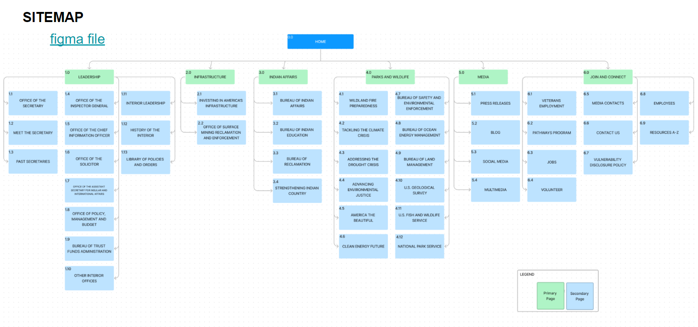
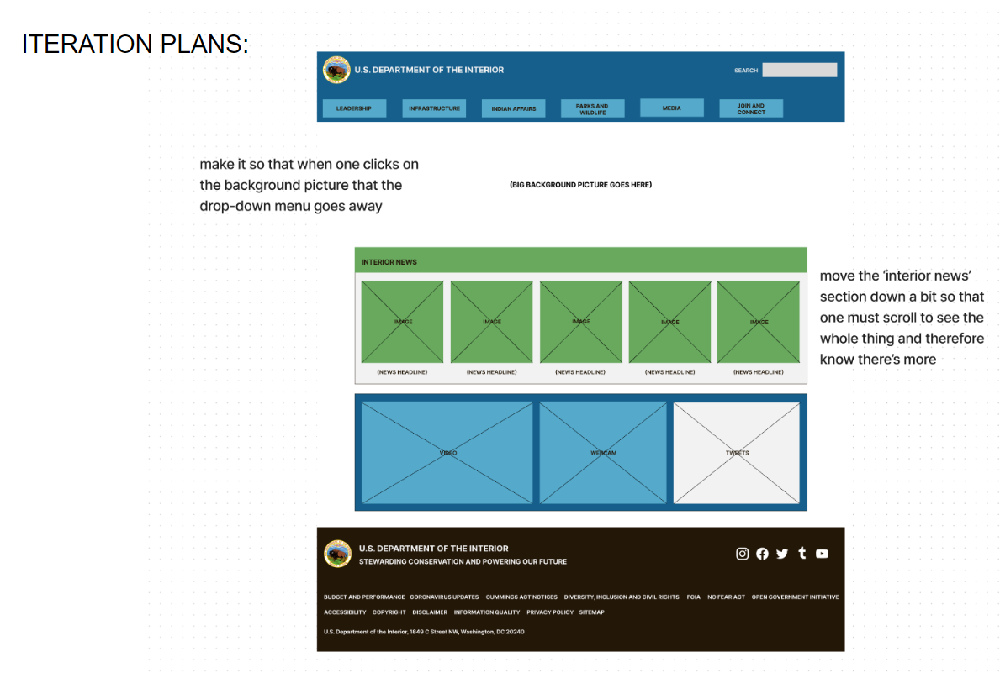

Department of the Interior website redesign
The Department of the Interior official website is designed for the interested public as well as those who work for the national government. The main purpose of the page is to keep people informed of the issues and action being taken regarding the overall internal development of the nation. The mission of the agency is internal development of the nation with priorities in natural environment, wildlife, infrastructure, and relationship with indigenous people. The problem is that people need a quick and easy way to navigate the site, especially if they're unfamiliar with some aspects of a government agency. The homepage should be divided into more easily-recognizable categories that visitors feel comfortable with and understand.

To accomplish this, I conducted user research consisting of interface analysis and usability testing. Then, I synthesized my findings to ideate an improved homepage and navigation design. After prototyping this new design, I conducted five-second usability tests and made iterations to my design based on the feedback I received.
-research-
First I completed a user interface analysis by doing a color accessibility evaluation and a heuristic evaluation, created a proto-persona, and developed a user path for usability testing based on said proto-persona. My user path was based around the persona of a user who might use the website to plan their next trip to a national park. I chose this path because I felt like it would be the most accessible to the people I would be testing and to the everyday layperson that may happen to visit the site. Four users had to complete the simple task of locating the national parks button within the navigation bar menu and make it to the national parks page, and I also asked them about their general impressions and opinions.

-synthesis-
Taking the notes from the tests, I organized them in Miro finally into a feature prioritization matrix. The usability testing showed that the main navigation bar was confusing and the need for some visuals.

-ideation-
For ideation, I first started with reorganizing the navigation bar and all the menus within it. I used card-sorting to accomplish this. From the card-sorting, I developed a sitemap in Figma and then a wireframe of the navigation prototype. I also developed a mood board in InVision to help with visualizing an improved aesthetic for the page, as well as updated the color scheme. I kept with the general color scheme of the existing page but modified the colors slightly to what I felt was more pleasant on the eyes.

-prototyping-
With Figma, I created components of the nav bar and the footer for both desktop and mobile versions. I created a navigation bar that was much more organized and coherent, taking my cues for organization based upon the three main concentration areas of the department: 'infrastructure', 'indian affairs', and 'parks and wildlife'. I then improved upon my desktop and mobile wireframes by adding more color, design, and detail.

-testing-
Next, I conducted five-second usability tests to determine how my own redesign would be reacted to by users. I found I had to make the following adjustments:

Therefore, I made iterations to my prototype so that these issues were fixed. Most notably, I lowered a section that was on the homepage so that it could not be completely viewed without scrolling down a bit.
-conclusions-
This was my first time doing something to this degree and level. If I could do it again I would probably add more interaction to my page, such as more advanced buttons.